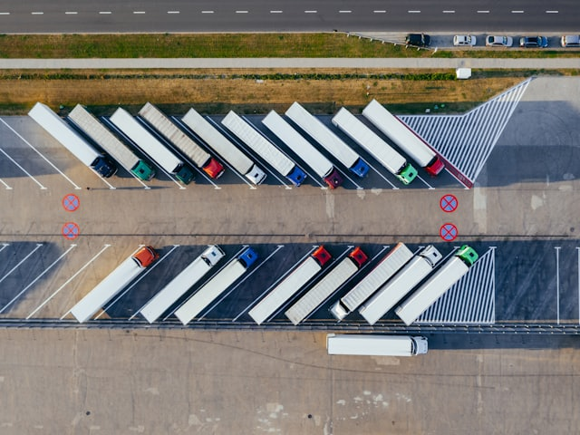
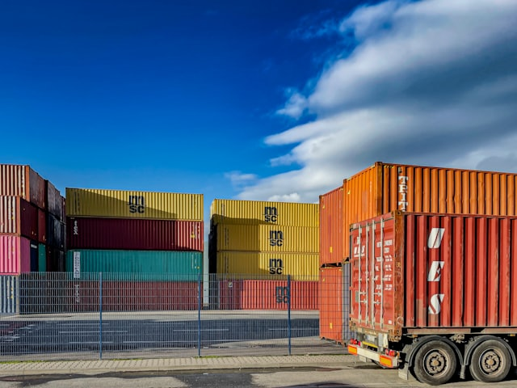
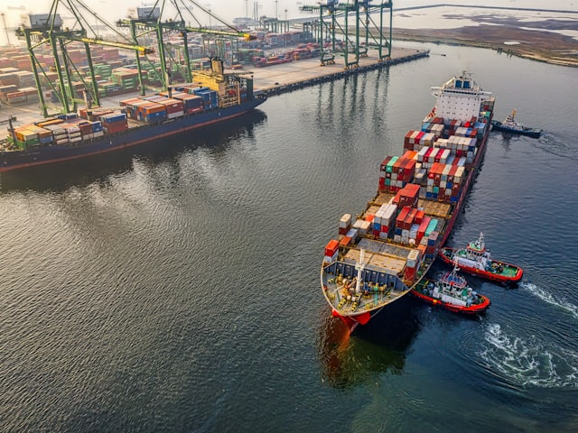
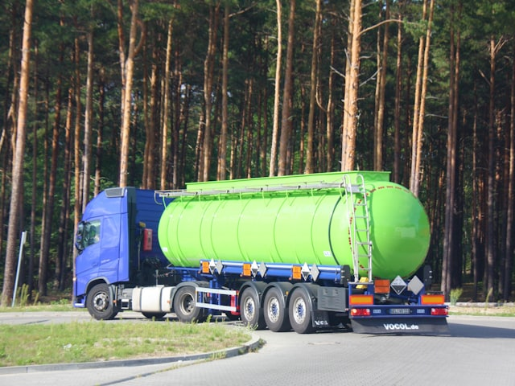
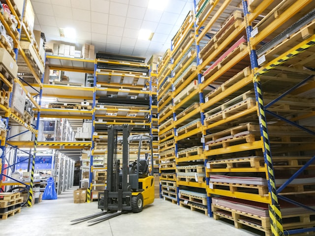
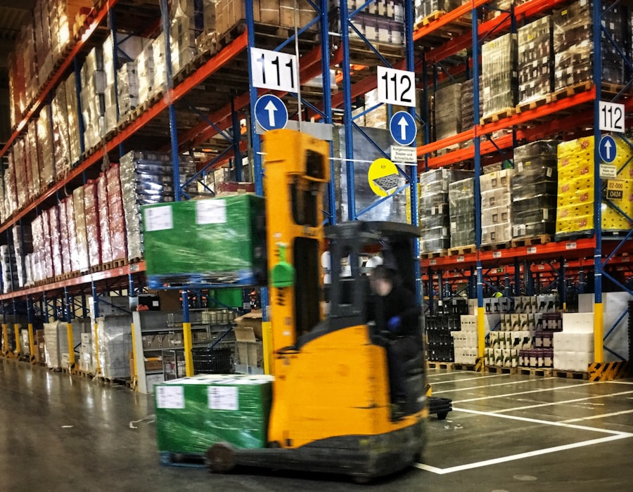

Terrestre
Carga completa y grupaje
Camión completo cuando la mercancía llena el remolque, y grupaje cuando no: pagas el espacio que ocupas y compartes el resto del camión con otras cargas.
Transporte terrestre · marítimo · aduanas
Carga completa y grupaje, contenedores por carretera, import y export marítimo, aduanas, portes y última milla. Calcula aquí una estimación orientativa del servicio que necesitas y te llamamos con el presupuesto en firme.
Servicios
Un mismo interlocutor para el camión, el barco y la aduana. Si un envío cambia de modo a mitad de camino, no cambia de responsable.

Terrestre
Camión completo cuando la mercancía llena el remolque, y grupaje cuando no: pagas el espacio que ocupas y compartes el resto del camión con otras cargas.

Terrestre
Porta-contenedores de 20 y 40 pies y contenedores de obra, con la maniobra de carga y descarga incluida. Del puerto a tu nave, o entre almacenes.

Marítimo
Contenedor completo desde y hacia los principales puertos españoles. Reserva de espacio, seguimiento del buque y aviso de llegada.
Aduanas
DUA de importación y exportación, clasificación arancelaria y cálculo de aranceles. Canarias, Ceuta y Melilla incluidas, con su régimen propio.
Distribución
Palés, bultos y envíos urgentes a domicilio o a comercio, con plataforma elevadora si en destino no hay muelle.

Especial
Conductores con formación ADR, documentación de transporte y consejero de seguridad. Cada clase tiene sus condiciones: se estudia envío a envío.

Almacenaje
Metros de estantería por el tiempo que haga falta, con entradas y salidas registradas y preparación de pedidos.
La suite de calculadoras
Cada tipo de transporte se cotiza de una manera. El porte nacional sale de una fórmula cerrada; el contenedor por carretera, de una horquilla por kilómetro; el flete marítimo, de una tarifa que cambia cada semana. Aquí están las tres, y ninguna te da un número que no podamos sostener.
Todos los importes son orientativos y los confirma el equipo. Calculados con la tarifa demo orientativa.
Cálculo por peso facturable y zona. Es la única de las tres que devuelve un importe concreto — y aun así lo confirma una persona.
Rellena la ruta y las medidas del bulto y aquí verás el desglose completo: volumen, peso facturable, tramo, zona, recargos e IVA.
Tarifa demo orientativa. Es una tabla de ejemplo construida para esta demostración: no es la tarifa de ninguna empresa real y no debe citarse como precio de mercado.
| Tramo | Fijo | Por kilo |
|---|
| Zona | Alcance | Factor |
|---|
| Concepto | Cómo se aplica |
|---|
Estimación por kilómetro. El resultado es una horquilla, no un precio cerrado: depende del camión y de la disponibilidad del día.
Dinos los kilómetros y el tipo de equipo y aquí verás el rango orientativo, con la franja por kilómetro de la que sale.
Tarifa demo orientativa. Franjas de ejemplo, editables en un único fichero. No son las tarifas de ninguna empresa real.
| Equipo | Franja por kilómetro |
|---|
Cotización guiada. Aquí no sale un precio cerrado a propósito: sale la horquilla de flete y la lista completa de conceptos que lo acompañan.
Dinos origen, destino, equipo e incoterm y aquí verás la horquilla de flete y todos los conceptos que se suman: THC, BAF, despacho de aduana, IGIC en Canarias…
Tarifa demo orientativa. Horquillas de ejemplo para enseñar el orden de magnitud. El flete real lo publica cada naviera por ruta y por semana.
| Equipo | Flete base orientativo |
|---|
A ese flete se le suman siempre THC, BAF, despacho de aduana (DUA) y transporte terrestre desde el puerto, más IGIC si el destino es Canarias y recargo IMO si la mercancía es peligrosa. Ninguno lleva cifra aquí: los fija la naviera, la terminal o la aduana.
Cómo funciona
La calculadora es el principio, no el final. A partir de ahí interviene alguien que conoce la ruta.
Eliges la calculadora que corresponde a tu envío y ves el desglose completo, sin letra pequeña.
Los parámetros del cálculo viajan con tu contacto: nadie te va a pedir dos veces lo mismo.
Confirmamos accesos, fechas y condiciones reales, y cerramos el importe definitivo.
Con seguimiento del envío y aviso en destino. Si algo cambia por el camino, te lo contamos antes.

Rutas y zonas
En terrestre, la zona sale del código postal de origen y de destino. En marítimo, del puerto de entrada. No hay tarifas escondidas por comunidad autónoma: hay cinco zonas y están todas a la vista.
Baleares y Canarias llevan tramo marítimo, y eso se nota en el factor de zona. Canarias, Ceuta y Melilla además tienen territorio aduanero propio: el envío pasa por DUA y paga IGIC o IPSI en lugar de IVA peninsular. La calculadora te lo avisa cuando toca.
En marítimo trabajamos con entrada por Valencia, Barcelona, Algeciras, Bilbao y Las Palmas, y con los orígenes habituales de Asia, Mediterráneo, América y África.
Preguntas
No. Todo importe que sale de las tres calculadoras es orientativo y lo confirma el equipo. La tabla que usan es una tarifa demo orientativa, etiquetada como tal en la propia página: es una tabla de ejemplo de esta demostración, no la tarifa de ninguna empresa real.
Un camión se llena antes de metros cúbicos que de kilos. Por eso se convierte el volumen en kilos —volumen en m³ × 250 kg/m³ en esta demo— y se factura el mayor de los dos: el peso real o el volumétrico.
Un palé de colchones de 1,2 × 0,8 × 1,6 m pesa 80 kg reales pero ocupa 1,536 m³, es decir 384 kg volumétricos. Se factura por 384 kg. Es la diferencia entre pagar por lo que pesa y pagar por lo que ocupa.
Porque el importe real depende del camión disponible ese día, de si hay carga de retorno, de los peajes de la ruta y de la fecha. Un número cerrado en un formulario web sería un número inventado, y luego habría que corregirlo por teléfono.
El flete lo publica cada naviera por ruta y por semana, y se mueve mucho. La calculadora enseña la horquilla de partida del equipo elegido y enumera los conceptos que se suman —THC, BAF, despacho de aduana (DUA), transporte terrestre desde el puerto, IGIC si el destino es Canarias y recargo IMO si la mercancía es peligrosa— sin ponerles cifra. Con tus parámetros, el equipo pide tarifa real y te la confirma.
Cinco: misma provincia, provincias limítrofes, resto de la península, Baleares, y Canarias, Ceuta y Melilla. La zona se deduce de los dos primeros dígitos del código postal, o del nombre de la provincia si prefieres escribirlo así.
La adyacencia entre provincias que usa esta demo es una simplificación: no contempla enclaves como Treviño o Llívia.
En terrestre, el ADR añade un recargo porcentual y exige conductor con formación, documentación de transporte y consejero de seguridad. En marítimo, la naviera aplica un recargo IMO que depende de la clase IMDG y del embalaje. En los dos casos hace falta revisar la ficha de seguridad del producto antes de cerrar nada.
Esto es una demostración de WhiteMoon: los datos que dejes se guardan en el CRM de pruebas de WhiteMoon y sirven para enseñar cómo funciona la captación. No se comparten con terceros. Si has entrado por curiosidad y quieres que borremos tu registro, escríbenos a comercial@whitemoon.es.
Hablemos
Si tu envío no encaja en ninguna de las tres calculadoras —mercancía sobredimensionada, proyecto industrial, un tráfico recurrente— escríbenos y lo estudiamos. Las rutas raras son las que mejor se nos dan.